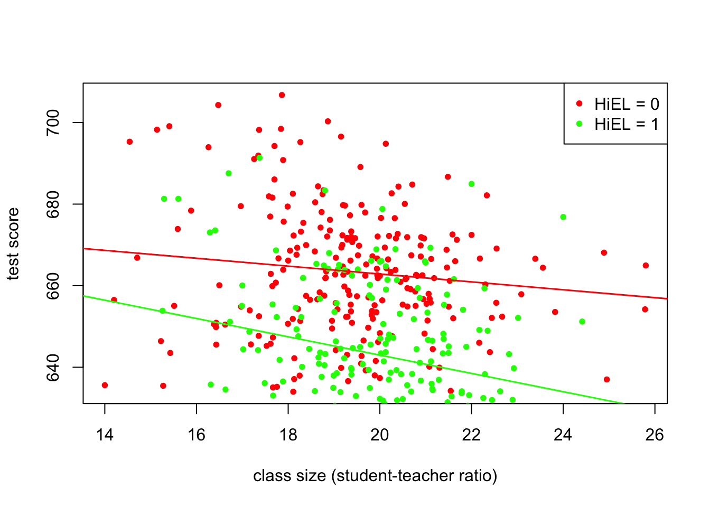

8.3 Interactions Between Independent Variables
There are research questions where it is interesting to know how the effect on \(Y\) of a change in one independent variables dependends on the value of another independent variable. For example, we could ask if districts with many english learners benefit differentially from a decrease in class sizes than those with few english learning students. To answer this, we need to include an interaction term into a multiple regression model. We will consider three cases:
Interactions between two binary variables
Interactions between a binary and a continuous variable
Interactions between two continuous variables
The following subsections discuss those cases briefly and demonstrate how to perform such regressions using R.
Interactions Between Two Binary Variables
Take two binary variables \(D_1\) and \(D_2\) and the population regression
\[ Y_i = \beta_0 + \beta_1 \times D_{1i} + \beta_2 \times D_{2i} + u_i. \]
Now assume
\[\begin{align} Y_i=& \, \ln(Earnings_i),\\ \\ D_{1i} =& \, \begin{cases} 1 & \text{if $i^{th}$ person has a college degree} \\ 0 & \text{else}, \end{cases} \\ \\ D_{2i} =& \, \begin{cases} 1 & \text{if $i^{th}$ person is female} \\ 0 & \text{if $i^{th}$ person is male}. \end{cases}\\ \end{align}\]By now You should know that \(\beta_1\) measures the average difference in \(\ln(Earnings)\) between individuals with and without a college degree and \(\beta_2\) is the gender differential in \(\ln(Earnings)\), ceteris paribus. This model
\[ Y_i = \beta_0 + \beta_1 \times D_{1i} + \beta_2 \times D_{2i} + \beta_3 \times (D_{1i} \times D_{2i}) + u_i \]
\((D_{1i} \times D_{2i})\) is called an interaction term and \(\beta_3\) measures the difference in the effect of having a college degree for women versus men.
Key Concept 8.3
A Method for Interpreting Coefficients in Regression with Binary Variables
Compute expected values of \(Y\) for each possible set described by the set of binary variables. Compare the expected values. The coefficients can be expressed either as expected values or as the difference between at least two expected values.
Following Key Concepts 8.1 we have
\[\begin{align*} E(Y_i\vert D_{1i}=0, D_{2i} = d_2) =& \, \beta_0 + \beta_1 \times 0 + \beta_2 \times d_2 + \beta_3 \times (0 \times d_2) \\ =& \, \beta_0 + \beta_2 \times d_2. \end{align*}\]Changing \(D_{1i}\) from \(0\) to \(1\) we obtain
\[\begin{align*} E(Y_i\vert D_{1i}=1, D_{2i} = d_2) =& \, \beta_0 + \beta_1 \times 1 + \beta_2 \times d_2 + \beta_3 \times (1 \times d_2) \\ =& \, \beta_0 + \beta_1 + \beta_2 \times d_2 + \beta_3 d_2 \end{align*}\]and hence the overall effect is
\[ E(Y_i\vert D_{1i}=1, D_{2i} = d_2) - E(Y_i\vert D_{1i}=0, D_{2i} = d_2) = \beta_1 + \beta_3 d_2 \] so the effect is a difference of expected values.
Application to the student-teacher ratio and the percentage of English learners
Now let
\[\begin{align*} HiSTR =& \, \begin{cases} 1, & \text{if $STR \geq 20$} \\ 0, & \text{else}, \end{cases} \\ \\ HiEL =& \, \begin{cases} 1, & \text{if $PctEL \geq 10\%$} \\ 0, & \text{else}. \end{cases} \end{align*}\]We may use R construct the variables above.
# Add HiSTR to CASchools
CASchools$HiSTR <- as.numeric(CASchools$size >= 20)
# Add HiEL to CASchools
CASchools$HiEL <- as.numeric(CASchools$english >= 10)We proceed by estimating the model
\[ TestScore_i = \beta_0 + \beta_1 \times HiSTR + \beta_2 \times HiEL + \beta_3 \times (HiSTR \times HiEL) + u_i \]
using lm(). There are several ways to add an interaction term to the model formula argument of lm() but the most intuitive is to use the product of both variables HiEL * HiSTR.
# estimate the model with binary interaction term
bi_model <- lm(score ~ HiSTR + HiEL + HiSTR * HiEL, data = CASchools)
# print summary
summary(bi_model)##
## Call:
## lm(formula = score ~ HiSTR + HiEL + HiSTR * HiEL, data = CASchools)
##
## Residuals:
## Min 1Q Median 3Q Max
## -39.078 -10.679 -1.282 9.665 45.522
##
## Coefficients:
## Estimate Std. Error t value Pr(>|t|)
## (Intercept) 664.143 1.316 504.852 < 2e-16 ***
## HiSTR -1.908 2.235 -0.854 0.394
## HiEL -18.316 2.144 -8.544 2.49e-16 ***
## HiSTR:HiEL -3.260 3.223 -1.012 0.312
## ---
## Signif. codes: 0 '***' 0.001 '**' 0.01 '*' 0.05 '.' 0.1 ' ' 1
##
## Residual standard error: 16.06 on 416 degrees of freedom
## Multiple R-squared: 0.2948, Adjusted R-squared: 0.2897
## F-statistic: 57.97 on 3 and 416 DF, p-value: < 2.2e-16The estimated regression model is
\[ \widehat{TestScore} = 664.1 - 1.9 \times HiSTR - 18.3 \times HiEL - 3.3 \times (HiSTR \times HiEL) \]
and it predicts that the effect of moving from a school district with a low student-teacher ratio to a district with a high student-teacher ratio, depending on high or low percentage of english learners is \(-1.9-3.3\times HiEL\). So for districts with a low share of english learners (\(HiEL = 0\)), the estimated effect is a decrease of \(1.9\) points in test scores while for districts with a big fraction of english learner (\(HiEL = 1\)), the predicted decrease in test scores amounts to \(1.9 + 3.3 = 5.2\) points.
We can also use the model to estimate the mean test score for each combination of binary variables.
# estimate means for all combinations of HiSTR and HiEL
predict(bi_model, newdata = data.frame("HiSTR"=0, "HiEL"=0))## 1
## 664.1433predict(bi_model, newdata = data.frame("HiSTR"=0, "HiEL"=1))## 1
## 645.8278predict(bi_model, newdata = data.frame("HiSTR"=1, "HiEL"=0))## 1
## 662.2354predict(bi_model, newdata = data.frame("HiSTR"=1, "HiEL"=1))## 1
## 640.6598Interactions Between a Continuous and a Binary Variable
Now consider a continuous variable \(X_i\), the years of working experience of person \(i\) instead of the gender. We than have
\[\begin{align*} Y_i =& \, \ln(Earnings_i) \\ \\ X_i =& \, \text{working experience of person }i \\ \\ D_i =& \, \begin{cases} 1, & \text{if $i^{th}$ person has a college degree} \\ 0, & \text{else}. \end{cases} \end{align*}\]The base model thus is
\[ Y_i = \beta_0 + \beta_1 \times X_i + \beta_2 \times D_i + u_i, \]
a simple multiple regression model that allows us to estimate the average benefit of having a college degree holding working experience constant and the average effect on earnings of a change in working experience holding college degree constant.
By adding the interaction term \(X_i \times D_i\) we allow the effect of an additional year of work experience to differ for person with and without college degree.
\[ Y_i = \beta_0 + \beta_1 \times X_i + \beta_2 \times D_i + \beta_3 \times (X_i \times D_i) + u_i \]
Here, \(\beta_3\) measures the difference in the effect of an additional year of work experience for college graduates versus nongraduates. A further possible specifications is
\[ Y_i = \beta_0 + \beta_1 X_i + \beta_2 (X_i \times D_i) + u_i. \]
This model states that the expected impact of an additional year of work experience on earnings is the same for individuals without college degree but differs for college graduates. All three population regression functions can be visualized by straight lines. Key Concept 8.4 summarizes the differences.
Key Concept 8.4
Interactions Between Binary and Continuous Variables
An interaction term like \(X_i \times D_i\) (where \(X\) is continuous and \(D\) is binary) allows for the slope to depend on the binary variable \(D\). There are three possibilities:
- Different intercept and same slope: \[ Y_i = \beta_0 + \beta_1 X_i + \beta_2 D_i + u_i \]
Different intercept and different slope: \[ Y_i = \beta_0 + \beta_1 X_i + \beta_2 D_i + \beta_3 \times (X_i \times D_i) + u_i \]
- Same intercept and different slope: \[ Y_i = \beta_0 + \beta_1 X_i + \beta_2 (X_i \times D_i) + u_i \]
The following code chunk shows how replicate the results shown in Figure 8.8 using fictional data.
# generate fictional data
set.seed(1)
X <- runif(200,0, 15)
D <- sample(0:1, 200, replace = T)
Y <- 450 + 150 * X + 500 * D + 50 * (X * D) + rnorm(200, sd=300)
# divide plotting area
m <- rbind(c(1, 2), c(3, 0))
layout(m)
# Estimate models and plot regression lines
# 1.(base model)
plot(X,log(Y),
pch = 20,
col = "steelblue",
main = "Different Intercepts, Same Slope"
)
mod1_coef <- lm(log(Y) ~ X + D)$coefficients
abline(coef = c(mod1_coef[1], mod1_coef[2]),
col = "red",
lwd = 1.5
)
abline(coef = c(mod1_coef[1] + mod1_coef[3], mod1_coef[2]),
col = "green",
lwd = 1.5
)
# 2. (base model + interaction term)
plot(X,log(Y),
pch = 20,
col = "steelblue",
main = "Different Intercepts, Different Slopes"
)
mod2_coef <- lm(log(Y) ~ X + D + X:D)$coefficients
abline(coef = c(mod2_coef[1], mod2_coef[2]),
col = "red",
lwd = 1.5
)
abline(coef = c(mod2_coef[1] + mod2_coef[3], mod2_coef[2] + mod2_coef[4]),
col = "green",
lwd = 1.5
)
# 3. (omission of D as regressor + interaction term)
plot(X,log(Y),
pch = 20,
col = "steelblue",
main = "Same Intercept, Different Slopes"
)
mod3_coef <- lm(log(Y) ~ X + X:D)$coefficients
abline(coef = c(mod3_coef[1], mod3_coef[2]),
col = "red",
lwd = 1.5
)
abline(coef = c(mod3_coef[1], mod3_coef[2] + mod3_coef[3]),
col = "green",
lwd = 1.5
)
Application to the student-teacher ratio and the percentage of English learners
Using a model specification like 2. in Key Concept 8.3 we may answer the question whether the effect on test scores of decreasing the student-teacher ratio depends on the whether there are many or few English learners. We estimate the regression model
\[ \widehat{TestScore_i} = \beta_0 + \beta_1 \times size_i + \beta_2 \times HiEL_i + \beta_2 (size_i \times HiEL_i) + u_i. \]
# estimate the model
bci_model <- lm(score ~ size + HiEL + size * HiEL, data = CASchools)
# print summary to console
summary(bci_model)##
## Call:
## lm(formula = score ~ size + HiEL + size * HiEL, data = CASchools)
##
## Residuals:
## Min 1Q Median 3Q Max
## -37.356 -10.790 -0.841 9.911 46.457
##
## Coefficients:
## Estimate Std. Error t value Pr(>|t|)
## (Intercept) 682.2458 10.5109 64.908 <2e-16 ***
## size -0.9685 0.5398 -1.794 0.0735 .
## HiEL 5.6391 16.7177 0.337 0.7360
## size:HiEL -1.2766 0.8441 -1.512 0.1312
## ---
## Signif. codes: 0 '***' 0.001 '**' 0.01 '*' 0.05 '.' 0.1 ' ' 1
##
## Residual standard error: 15.88 on 416 degrees of freedom
## Multiple R-squared: 0.3103, Adjusted R-squared: 0.3054
## F-statistic: 62.4 on 3 and 416 DF, p-value: < 2.2e-16The estimated regression model is
\[ \widehat{TestScore} = 682.2 - 0.97 \times size + 5.6 \times HiEL - 1.28 \times (size \times HiEL). \]
We find that the estimated regression line for districts with a low fraction of English learners (\(HiEL_i=0\)) is
\[ \widehat{TestScore} = 682.2 - 0.97\times size_i. \]
For districts with a high fraction of English learners we have
\[\begin{align} \widehat{TestScore} =& \, 682.2 + 5.6 - 0.97\times size_i - 1.28 \times size_i \\ =& \, 687.8 - 2.25 \times size_i \end{align}\]so the predicted increase in test scores following a reduction of the student-teacher ratio by \(1\) is about \(0.97\) points in districts where the fraction of English learners is low but \(2.25\) in districts with a high share of English learners. The difference between these effects is \(1.28\), the magnitude of the coefficient on the interaction term \(size \times HiEL\).
The next code chunk draws both lines belonging to the model. In order to make observations with \(HiEL = 0\) distinguishable from those with \(HiEL = 0\), we assign different colors.
# identify observations PctEL >= 10
id <- CASchools$english >= 10
# plot observations with HiEL = 0 as red dots
plot(CASchools$size[!id], CASchools$score[!id],
pch = 20,
col = "red",
main = "",
xlab = "class size (student-teacher ratio)",
ylab = "test score"
)
# plot observations with HiEL = 1 as green dots
points(CASchools$size[id], CASchools$score[id],
pch = 20,
col = "green"
)
# read out estimated coefficients of bci_model
coefs <- bci_model$coefficients
# Draw the estimated regression line for HiEL = 0
abline(coef = c(coefs[1], coefs[2]),
col = "red",
lwd = 1.5
)
# Draw the estimated regression line for HiEL = 1
abline(coef = c(coefs[1]+coefs[3], coefs[2]+coefs[4]),
col = "green",
lwd = 1.5
)
# Add a legend to the plot
legend("topright",
pch=c(20,20),
col = c("red","green"),
legend = c("HiEL = 0", "HiEL = 1")
)
Interactions Between Two Continuous Variables
If we have a regression model with \(Y\) the log earnings and two continuous regressors \(X_1\), the years of work experience, and \(X_2\), the years of schooling, a simple multiple regression model cannot be used to estimate the effect on wages of an additional year of work experience depending on a given level of schooling. This effect can be assessed by including the interaction term \((X_{1i} \times X_{2i})\) in the model:
\[ Y_i = \beta_0 + \beta_1 X_{1i} + \beta_2 X_{2i} + \beta_3 \times (X_{1i} \times X_{2i}) + u_i \]
Following Key Concept 8.1 we find that the effect on \(Y\) of a change on \(X_1\) given \(X_2\) is \[ \frac{\Delta Y}{\Delta X_1} = \beta_1 + \beta_3 X_2. \]
In the earnings example, a positive \(\beta_3\) implies that the effect on log earnings of an additional year of work experience grows linearly with years of schooling.
Vice versa we have \[ \frac{\Delta Y}{\Delta X_2} = \beta_2 + \beta_3 X_1. \] as the effect on log earnings of an additional year of schooling holding work experience constant.
Altogether we find that \(\beta_3\) measures the effect of a unit increase in \(X_1\) and \(X_2\)
Key Concept 8.5 summarizes interactions between two regressors in multiple regression.
Key Concept 8.5
Interactions in Multiple Regression
The interaction term between the two regressors \(X_1\) and \(X_2\) is given by their product \(X_1 \times X_2\). Adding this interaction term as a regressor to the model \[ Y_i = \beta_0 + \beta_1 X_1 + \beta_2 X_2 + u_i \] allows the effect of change on \(X_2\) to depend on the value of \(X_1\) and vice versa. Thus the coefficient \(\beta_3\) in the model \[ Y_i = \beta_0 + \beta_1 X_1 + \beta_2 X_2 + \beta_3 (X_1 \times X_2) + u_i \] measures the effect of a one-unit increase in both \(X_1\)
8.3.0.0.1 Application to the student-teacher ratio and the percentage of English learners
We will now examine the interaction between student-teacher ratio and the percentage of english learners which both are continuous variables.
# estimate regression model including the interaction between 'PctEL' and 'size'
cci_model <- lm(score ~ size + english + english:size, data = CASchools)
# print a summary to the console
summary(cci_model)##
## Call:
## lm(formula = score ~ size + english + english:size, data = CASchools)
##
## Residuals:
## Min 1Q Median 3Q Max
## -48.836 -10.226 -0.343 9.796 43.447
##
## Coefficients:
## Estimate Std. Error t value Pr(>|t|)
## (Intercept) 686.338527 9.402603 72.995 <2e-16 ***
## size -1.117018 0.482537 -2.315 0.0211 *
## english -0.672912 0.437985 -1.536 0.1252
## size:english 0.001162 0.021905 0.053 0.9577
## ---
## Signif. codes: 0 '***' 0.001 '**' 0.01 '*' 0.05 '.' 0.1 ' ' 1
##
## Residual standard error: 14.48 on 416 degrees of freedom
## Multiple R-squared: 0.4264, Adjusted R-squared: 0.4223
## F-statistic: 103.1 on 3 and 416 DF, p-value: < 2.2e-16The estimated model equation is \[ \widehat{TestScore} = 686.3 - 1.12 \times STR - 0.67 \times PctEL + 0.0012(STR\times PctEL). \]
For the interpretation, let us consider some quartiles of \(PctEL\).
summary(CASchools$english)## Min. 1st Qu. Median Mean 3rd Qu. Max.
## 0.000 1.941 8.778 15.768 22.970 85.540According to (8.1), if \(PctEL\) is at its median \(8.78\) the slope of the regression function relating test scores and the student teacher ratio is predicted to be \(-1.12 + 0.0012 \times 8.78 = -1.11\). This means that increasing \(STR\) by one unit deteriorates test scores by estimated \(1.11\) points. For the \(75\%\) quantile the estimated change on \(TestScore\) of a one-unit increase in \(STR\) is estimated by \(-1.12 + 0.0012 \times 23.0 = -1.09\) so the slope is somewhat lower. The interpretation is that for a school district with \(23\%\) english learners, a reduction of the studtent-teacher ratio by one unit is expected to increase the test scores by only \(1.09\) points.
Note, however, that the output produced by summary indicates that the difference of the effect for the median and the \(75\%\) quantile is not statistically significant. The \(p\)-value for the test \(H_0: \beta_3 = 0\) cannot be rejected at the \(5\%\) level of significance. Using robust standard errors, one can show that \(\beta_3\) is not significantly different from zero even at the level of \(10\%\) (verify this using R!).
Example: The Demand for Economic Journals
In this section we replicate the empirical example presented at pages 336 - 337 of the book. The central question is: how elastic is the demand by libraries for economic journals? The idea here is to analyze the relationship between the number of subscription to a journal at U.S. libraries and the journal’s subscription price. The study uses the dataset Journals wich is provided with the AER package and contains observations for \(180\) economic journals for the year \(2000\). You can use the help function (?Journals) to get more information on the data after loading the package.
# load package and the dataset
library(AER)
data("Journals")We measure the price as “price per citation” and have to compute journal age and the number of character manually. For consistency with the book we also rename the variables.
# define and rename variables
Journals$PricePerCitation <- Journals$price/Journals$citations
Journals$Age <- 2000 - Journals$foundingyear
Journals$Characters <- Journals$charpp * Journals$pages/10^6
Journals$Subscriptions <- Journals$subsNote that the range of “price per citation” is quite large:
# compute summary statistics for price per citation
summary(Journals$PricePerCitation)## Min. 1st Qu. Median Mean 3rd Qu. Max.
## 0.005223 0.464495 1.320513 2.548455 3.440171 24.459459The lowest price observed is a mere \(0.5\)¢ per citation while the highest price is more than \(20\)¢ per citation.
After loading and preparing the data, we estimate the four different model specifications. All models are log-log models. This is useful because it allows us to directly interpret the ceofficients as elasticities, see Key Concept 8.2. \((I)\) is a simple linear model. To aleviate a possible omitted variable bias, \((II)\) augments \((I)\) by the covariates \(\ln(Age)\) and \(\ln(Characters)\). The largest model \((III)\) attempts to capture nonlinearities in the relationship of \(\ln(Subscriptions)\) and \(\ln(PricePerCitation)\) using a cubic regression function of \(\ln(PricePerCitation)\) and also adds the interaction term \((PricePerCitation \times Age)\) while specfication \((IV)\) does not include the cubic term.
\[\begin{align*} (I)\quad \ln(Subscriptions_i) =& \, \beta_0 + \beta_1 \ln(PricePerCitation_i) + u_i \\ \\ (II)\quad \ln(Subscriptions_i) =& \, \beta_0 + \beta_1 \ln(PricePerCitation_i) + \beta_4 \ln(Age_i) + \beta_6 \ln(Characters_i) + u_i \\ \\ (III)\quad \ln(Subscriptions_i) =& \, \beta_0 + \beta_1 \ln(PricePerCitation_i) + \beta_2 \ln(PricePerCitation_i)^2 \\ +& \, \beta_3 \ln(PricePerCitation_i)^3 + \beta_4 \ln(Age_i) + \beta_5 \left[\ln(Age_i) \times \ln(PricePerCitation_i)\right] \\ +& \, \beta_6 \ln(Characters_i) + u_i \\ \\ (IV)\quad \ln(Subscriptions_i) =& \, \beta_0 + \beta_1 \ln(PricePerCitation_i) + \beta_4 \ln(Age_i) + \beta_5 + \beta_6 \ln(Characters_i) + u_i \end{align*}\]# Estimate models (I) - (IV)
Journals_mod1 <- lm(log(Subscriptions) ~ log(PricePerCitation), data = Journals)
Journals_mod2 <- lm(log(Subscriptions) ~ log(PricePerCitation) + log(Age) +
log(Characters), data = Journals)
Journals_mod3 <- lm(log(Subscriptions) ~ log(PricePerCitation) + I(log(PricePerCitation)^2) +
I(log(PricePerCitation)^3) + log(Age) + log(Age):log(PricePerCitation) +
log(Characters), data = Journals)
Journals_mod4 <- lm(log(Subscriptions) ~ log(PricePerCitation) + log(Age) +
log(Age):log(PricePerCitation) + log(Characters), data = Journals)Using summary(), we obtain the following estimated model equations:
It is of interest whether the coefficients the nonlinear transformations of \(\ln(PricePerCitation)\) in Model \((III)\) are statistically significant. To answer this, we use a \(F\)-Test:
# F-Test for significance of cubic terms
linearHypothesis(Journals_mod3,
c("I(log(PricePerCitation)^2)=0","I(log(PricePerCitation)^3)=0")
)## Linear hypothesis test
##
## Hypothesis:
## I(log(PricePerCitation)^2) = 0
## I(log(PricePerCitation)^3) = 0
##
## Model 1: restricted model
## Model 2: log(Subscriptions) ~ log(PricePerCitation) + I(log(PricePerCitation)^2) +
## I(log(PricePerCitation)^3) + log(Age) + log(Age):log(PricePerCitation) +
## log(Characters)
##
## Res.Df RSS Df Sum of Sq F Pr(>F)
## 1 175 82.738
## 2 173 82.500 2 0.2379 0.2494 0.7795We cannot reject the null hypothesis \(H_0: \beta_3=\beta_4=0\) in model \((III)\).
We will now use the stargazer() function to generate a verbose tabular representation of all four estimated models.
# load the stargazer package
library(stargazer)
# generate a Latex table using stargazer
stargazer(Journals_mod1, Journals_mod2, Journals_mod3, Journals_mod4,
column.labels = c("(I)", "(II)", "(III)", "(IV)")
)| Dependent variable: | ||||
| log(Subscriptions) | ||||
| (I) | (II) | (III) | (IV) | |
| log(PricePerCitation) | -0.533*** | -0.408*** | -0.961*** | -0.899*** |
| (0.036) | (0.042) | (0.189) | (0.162) | |
| I(log(PricePerCitation)2) | 0.017 | |||
| (0.024) | ||||
| I(log(PricePerCitation)3) | 0.004 | |||
| (0.007) | ||||
| log(Age) | 0.424*** | 0.373*** | 0.374*** | |
| (0.090) | (0.089) | (0.089) | ||
| log(Characters) | 0.206* | 0.235** | 0.229** | |
| (0.107) | (0.106) | (0.105) | ||
| log(PricePerCitation):log(Age) | 0.156*** | 0.141*** | ||
| (0.055) | (0.045) | |||
| Constant | 4.766*** | 3.207*** | 3.408*** | 3.434*** |
| (0.056) | (0.314) | (0.318) | (0.315) | |
| Observations | 180 | 180 | 180 | 180 |
| R2 | 0.557 | 0.613 | 0.635 | 0.634 |
| Adjusted R2 | 0.555 | 0.607 | 0.622 | 0.626 |
| Residual Std. Error | 0.750 (df = 178) | 0.705 (df = 176) | 0.691 (df = 173) | 0.688 (df = 175) |
| F Statistic | 224.037*** (df = 1; 178) | 93.009*** (df = 3; 176) | 50.149*** (df = 6; 173) | 75.749*** (df = 4; 175) |
| Note: | *p<0.1; **p<0.05; ***p<0.01 | |||
The subsequent code chunk reproduces figure 8.9 of the book:
# divide plotting area
m <- rbind(c(1, 2), c(3, 0))
layout(m)
# scatterplot
plot(Journals$PricePerCitation,
Journals$Subscriptions,
pch = 20,
col = "steelblue",
ylab = "Subscriptions",
xlab = "ln(Price per ciation)",
main = "(a)"
)
# log-log scatterplot and estimated regression line (I)
plot(log(Journals$PricePerCitation),
log(Journals$Subscriptions),
pch = 20,
col = "steelblue",
ylab = "ln(Subscriptions)",
xlab = "ln(Price per ciation)",
main = "(b)"
)
abline(Journals_mod1,
lwd = 1.5
)
# log-log scatterplot and regression lines (IV) for Age = 5 and Age = 80
plot(log(Journals$PricePerCitation),
log(Journals$Subscriptions),
pch = 20,
col = "steelblue",
ylab = "ln(Subscriptions)",
xlab = "ln(Price per ciation)",
main = "(c)"
)
JM4C <-Journals_mod4$coefficients
# Age = 80
abline(coef = c(JM4C[1] + JM4C[3] * log(80),
JM4C[2] + JM4C[5] * log(80)
),
col = "darkred",
lwd = 1.5
)
# Age = 5
abline(coef = c(JM4C[1] + JM4C[3] * log(5),
JM4C[2] + JM4C[5] * log(5)
),
col = "darkgreen",
lwd = 1.5
)
As can be seen from plots (a) and (b), the relation between subscriptions and the citation price is inverse and nonlinear and log-transforming both variables makes it approximately linear. Plot (c) shows that the price elasticity of journal subscriptions depends on the journal’s age: the red line shows the estimated relationship for \(Age=80\) while the green line represents the prediction from model \((IV)\) for \(Age=5\).
Which conclusion can be made?
We conclude that the demand for journals is more elastic for young journals than for old journals.
For model \((III)\) we cannot reject the null hypothesis that the coefficients on \(\ln(PricePerCitation)^2\) and \(\ln(PricePerCitation)^3\) are both zero using an \(F\)-test. This is evidence supporting a linear relation between log-subscriptions and log-price.
Demand is greater for Journals with more characters, holding price and age constant.
Hence we have found evidence, that the price elasticity of demand for economic journals depends on the age of the journal. Altogether our estimates suggest that the demand is very inelastic, i.e. the librararies’ demand for economic journals is quite insensitve to the price: using model \((IV)\), even for a young journal (\(Age=5\)) we estimate the price elasticity to be \(-0,899+0,374\times\ln(5)+0,141\times\left[\ln(1)\times\ln(5)\right] \approx -0.3\) so that a one percent increase in price is predicted to reduce the demand by only \(0.3\) percent.
This finding comes at no surprise since providing the most recent research is a necessity for libraries.